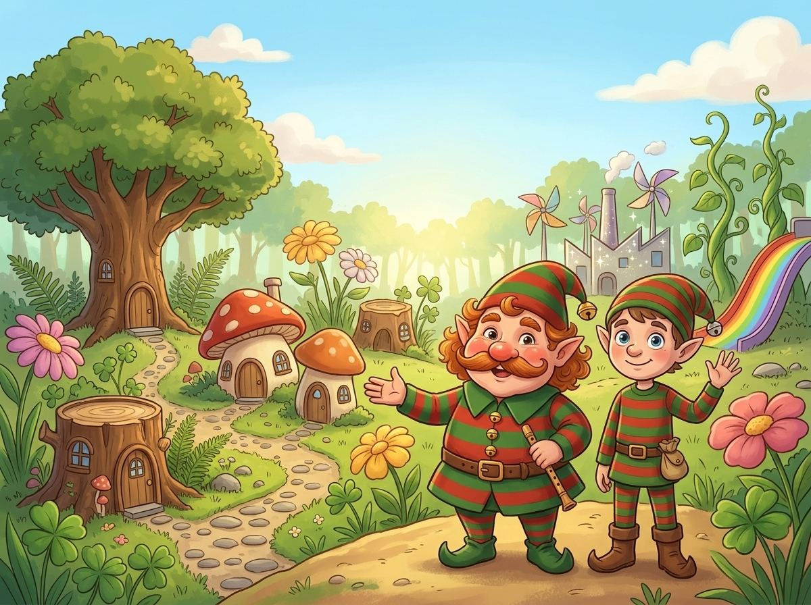
Mese egy titkos manófaluról, ahová csak a barátok juthatnak el
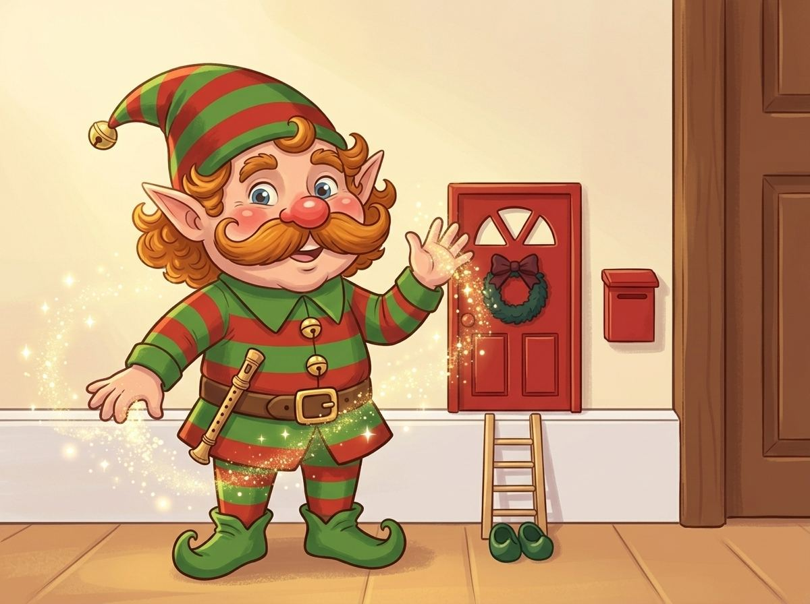
Szia! Én vagyok Bajusz Bandi, a manó, aki a falban lakik, a kis piros ajtó mögött. Valami nagyon különlegeset szeretnék neked megmutatni: Manófalvát, ahol a manók élnek.
Kapaszkodj jól a sapkám csengőjébe! Egy csipet varázspor… blublublu! – és már repülünk is!
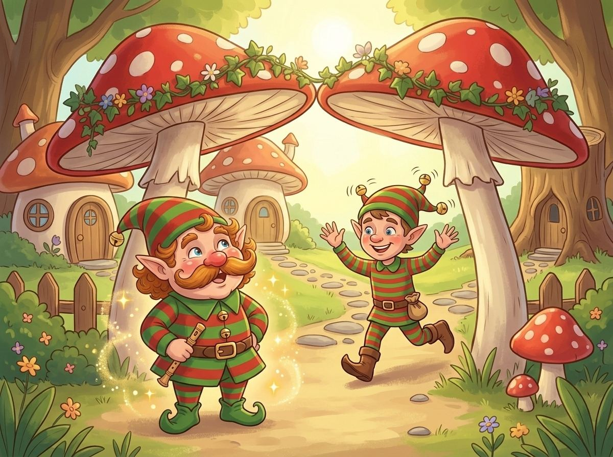
Hopp, megérkeztünk! Látod a kaput, amit két hatalmas gomba tart? Ez Manófalva bejárata. És nézd csak, ki integet ott! Az öcsém, Bajusz Anti.
Hallod, hogy csilingel? Anti sapkáján két csengő van, az enyémen csak egy. – Szia, Bandi! Hoztál vendéget? – kiáltotta. – Hoztam bizony! – felelte.
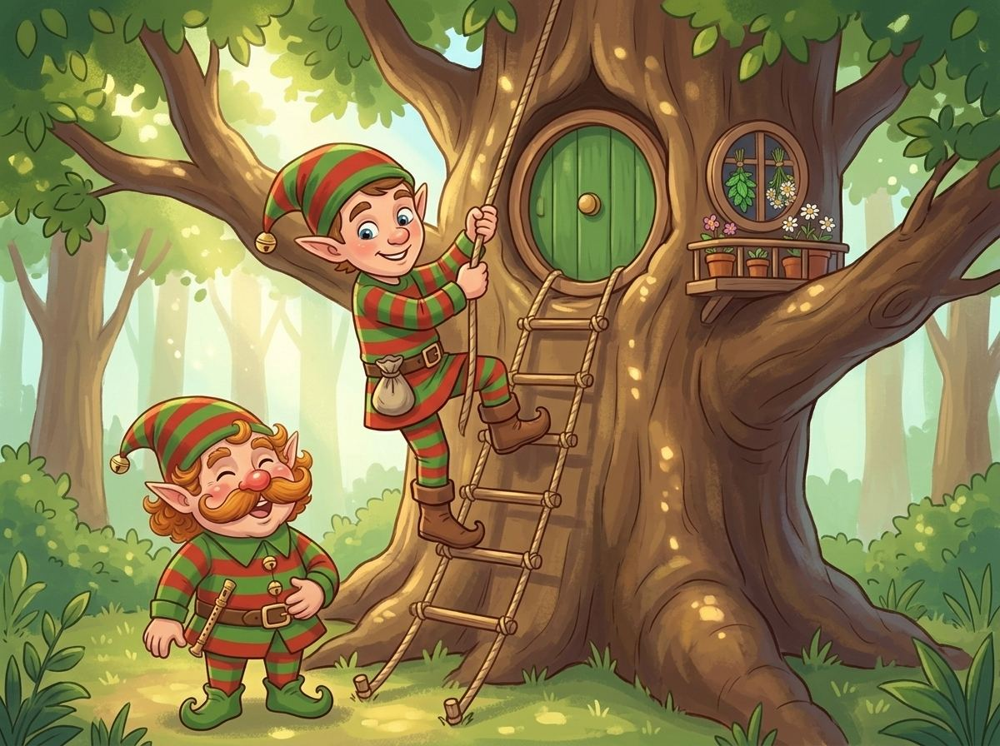
Anti egy öreg tölgyfa odvában lakik, fent a lombok között. Kötéllétrán kell felmászni, de Anti úgy szalad fel rajta, mint egy mókus.
Az ablakában gyógynövények száradnak: menta, kamilla és citromfű. – Ha megfázol, ebből főzök neked teát – mondta Anti büszkén.
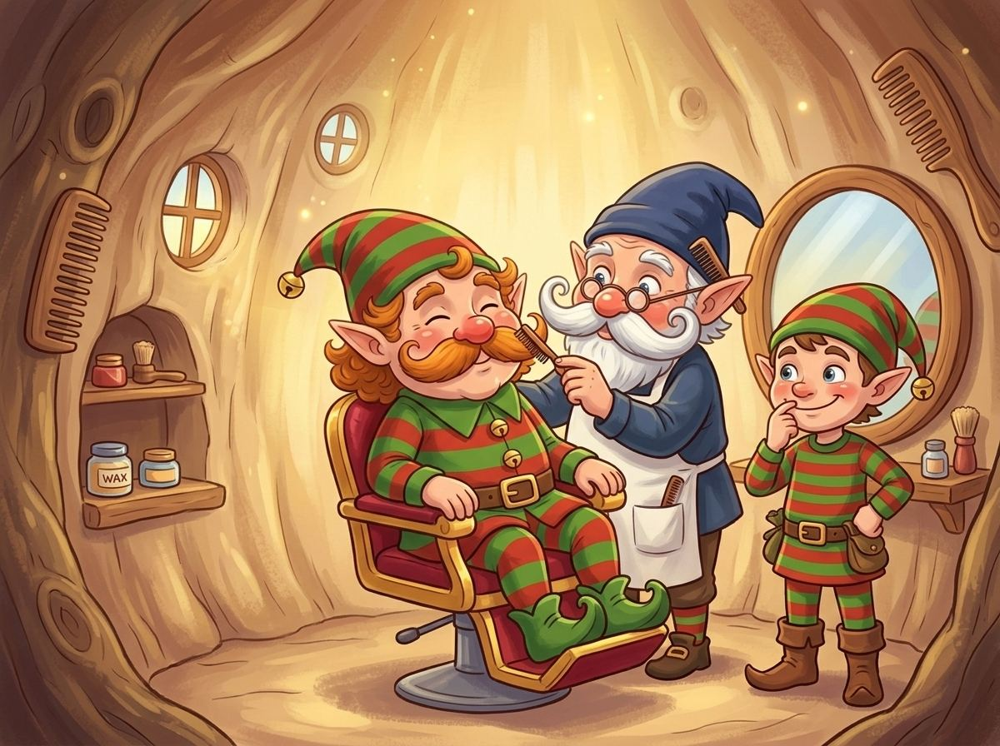
Anti szomszédjában van Pödör mester bajuszfodrász-szalonja. Hozzá járok minden hónapban, hogy a bajszom szép kunkori legyen.
Tudod, miért nincs Antinak bajsza? Egyszer Pödör mester véletlenül leborotválta! Anti először nagyon megijedt, aztán belenézett a tükörbe… és úgy megtetszett neki, hogy azóta is csupasz az arca.
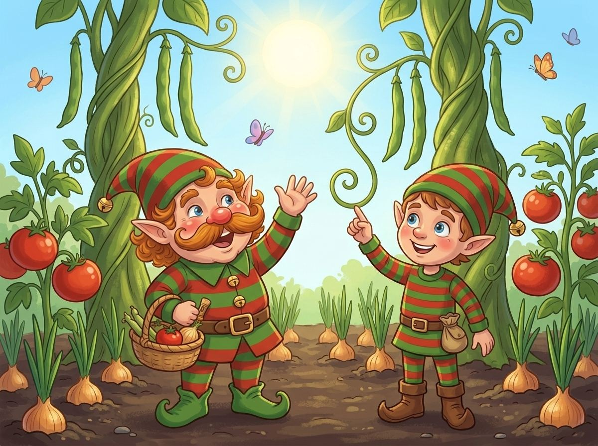
A falu mögött vannak a kertjeink. A babszárak olyan magasra nőnek, mint a fák, a paradicsomok pedig akkorák, mint a piros labdák. Mellettük hosszú sorokban bújnak a hagymák.
– És az miért van úgy, Bandi, hogy a bab mindig felfelé kunkorodik? – kérdezte Anti. – Mert integetni akar a napnak! – feleltem.
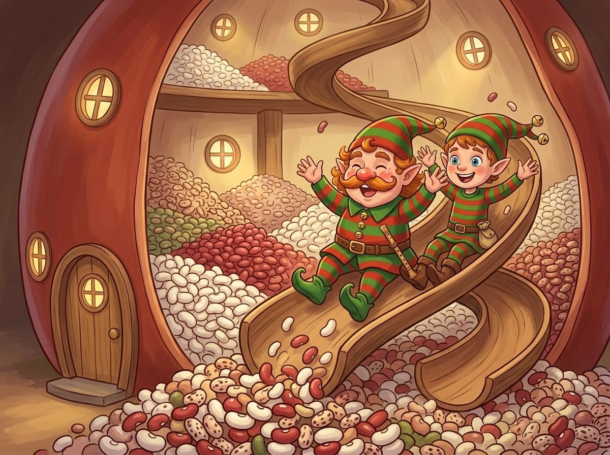
Itt áll a nagy babtározó, ami úgy néz ki, mint egy óriási babszem. Ebben tartjuk a babot egész télre, hogy minden manónak jusson hagymás bab.
És tudod, mi a legjobb benne? Belül egy hosszú, kanyargós csúszda vezet le! Huuuuu! – csúsztunk le Antival egyenesen a puha babkupacba.
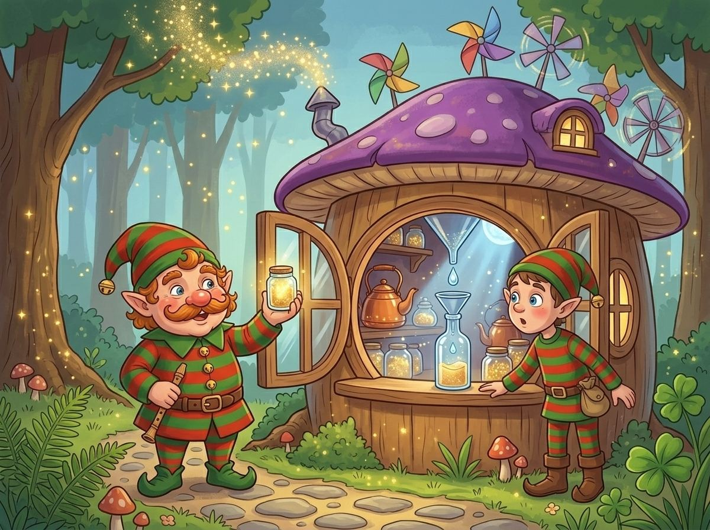
Ez Manófalva legcsillogóbb épülete: a varázsporgyár. A tetején szélkerekek forognak, a kéményéből pedig aranyszínű szikrák szállnak az ég felé.
A manók harmatcseppből, holdfényből és egy csipetnyi nevetésből készítik a varázsport. Hallod a gépeket? Blublublu, blublublu!
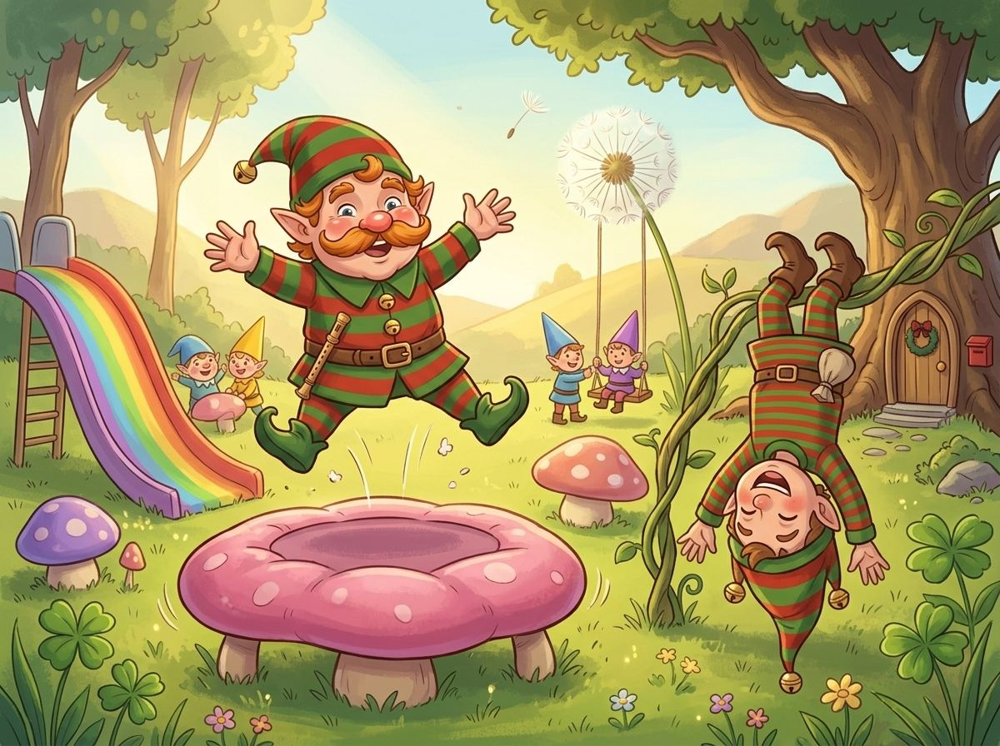
Na, ez a kedvencem! A manógyerekek varázsjátszótere. Itt a gombák puhák, mint a párna, és úgy lehet rajtuk ugrálni, mint egy trambulinon. Hopp, hopp, hopp!
Van pitypanghinta, ami egészen a felhőkig repít, és szivárványcsúszda is. Anti fejjel lefelé lógott a mászókán, és úgy nevetett, hogy a csengői csak úgy csilingeltek.
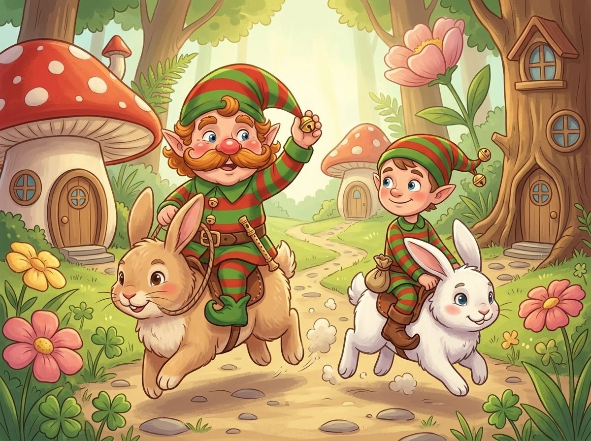
Elfáradt a lábad? Semmi baj! A nyuszilovardában már vár minket Tappancs és Puhi, a két nyuszi.
Felpattantunk a hátukra, és hopp-hopp, ugrálva vágtattunk végig a falu főutcáján. Az én bajszom lobogott a szélben, Anti csengői csilingeltek.
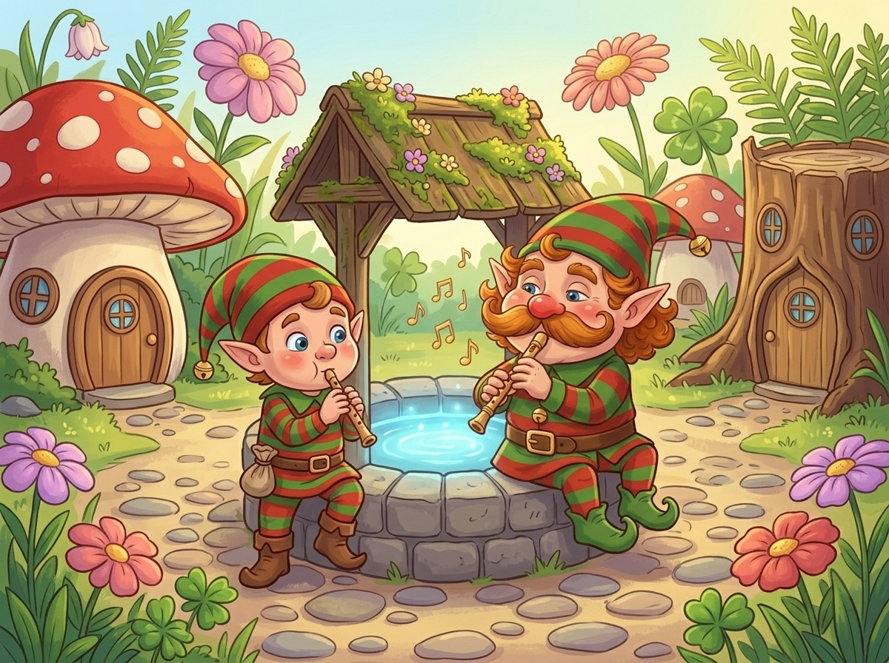
A falu közepén van a főtér, a főtér közepén pedig a kívánságkút. Ha valaki belesuttog egy kívánságot, a víz kéken felcsillan.
Anti azt kívánta, hogy egyszer olyan szépen furulyázzon, mint én. Elővettem a furulyámat, és megtanítottam neki egy kis dallamot. – Mikor tanulhatok meg én is ilyen gyorsan játszani? – kérdezte. – Lépésről lépésre, öcsém – mosolyogtam.
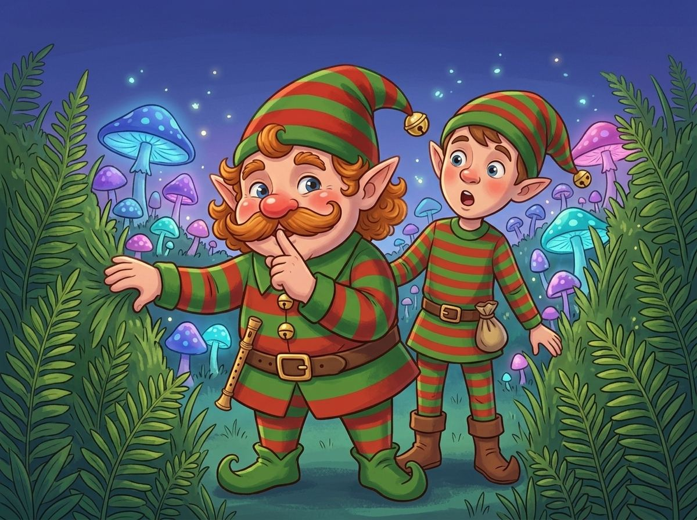
Most egy igazi titkot mutatok. Ígérd meg, hogy nem mondod el senkinek! Egy sűrű páfrányfal mögött rejtőzik a titkos varázsgombamező.
Ezek a gombák este kéken, lilán és rózsaszínen világítanak, és halkan dúdolnak. Csak az láthatja őket, aki a manók igazi barátja. Te most már az vagy.
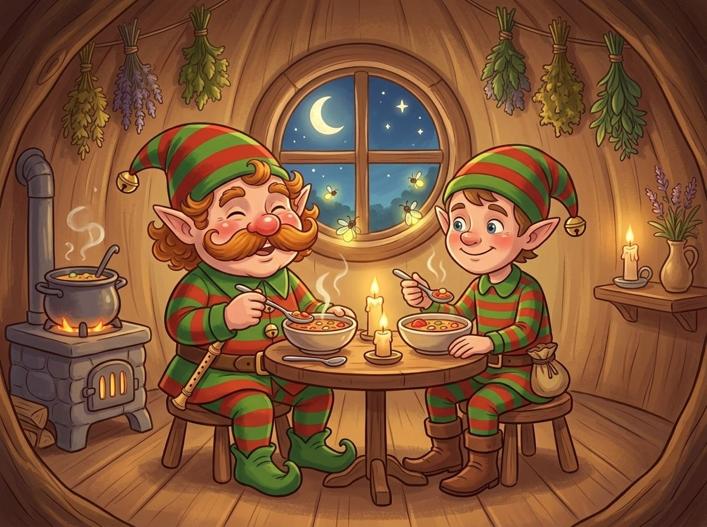
Mire besötétedett, nagyon megéheztünk. Anti odújában hagymás babot főztünk paradicsommal, ahogy én szeretem. Az ablakban szentjánosbogarak világítottak.
Jóllaktunk, és Anti még egy esti mesét is kért tőlem, pedig már nagy manó.
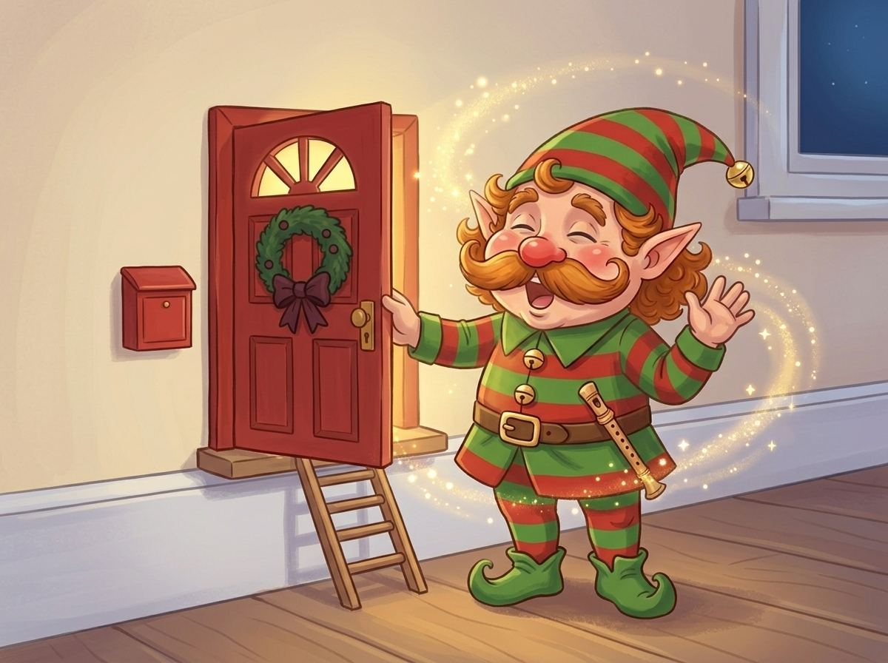
Ideje hazamenni. Megöleltem Antit, aki mindkét csengőjével csilingelve integetett. Egy csipet varázspor… blublublu! – és már ott is voltunk a piros ajtó előtt, a falban.
A kislány már aludt a szobájában, én is bebújtam az ágyamba. Jó éjszakát! Ha szeretnéd, legközelebb újra elviszlek Manófalvára.
Vége